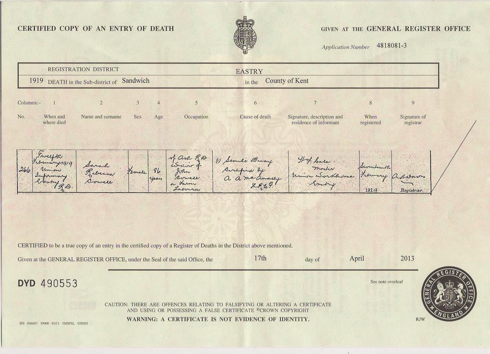

Sarah Rebecca Cowell (née Bennett) c1832 - 1919
[ Home ] | [ Calendar ] | [ Surnames Index ] | [ Errors ] | [ Family History ]The child of John Bennett (an agricultural labourer) and Mary Measday, Sarah Bennett, the great-great-grandmother of Nigel Horne, was born in Wingham, Kent, England c. 18321,2,3,4,5,6,7,8, was baptised there on 24 Aug 1832 and also married Troward Cowell (an agricultural labourer with whom she had 2 children: John and Troward) there at St Mary the Virgin Church on 13 May 185610 (Married in Wingham Parish Church).
During her life, she was living in Preston, Kent, England in 18411; at her birthplace in 18512; at Stodmarsh Street, Stodmarsh, Kent on 7 Apr 186115; at Nethergone, Chislet, Kent on 2 Apr 187111; in Island Road, Westbere, Kent on 3 Apr 18815; in Upstreet, Kent, England on 5 Apr 18916 and on 31 Mar 19017; and at Woodchurch Farm, Acol, Kent on 2 Apr 191112.
She died on 12 Feb 1919 on Union Workhouse, Mill Lane, Eastry, Kent9 (senile decay Death certificate says window of John Cowell, but I don't believe that to be correct. Perhaps that was Troward's middle name?) and was buried at St Nicholas Church, Ash, Kent on 18 Feb 1919.
Parents
- John was born c. 1807
- Mary was born c. 1811
Children
- John was born on 17 May 1858
- Troward was born c. May 1865
Citations
- 1841 England Census Online publication - Provo, UT, USA: The Generations Network, Inc., 2006.Original data - Census Returns of England and Wales, 1841. Kew, Surrey, England: The National Archives of the UK (TNA): Public Record Office (PRO), 1841. Data imaged from the National
- 1851 England Census Online publication - Provo, UT, USA: The Generations Network, Inc., 2005.Original data - Census Returns of England and Wales, 1851. Kew, Surrey, England: The National Archives of the UK (TNA): Public Record Office (PRO), 1851. Data imaged from the National
- 1861 England Census Online publication - Provo, UT, USA: The Generations Network, Inc., 2005.Original data - Census Returns of England and Wales, 1861. Kew, Surrey, England: The National Archives of the UK (TNA): Public Record Office (PRO), 1861. Data imaged from the National
- 1871 England Census Online publication - Provo, UT, USA: The Generations Network, Inc., 2004.Original data - Census Returns of England and Wales, 1871. Kew, Surrey, England: The National Archives of the UK (TNA): Public Record Office (PRO), 1871. Data imaged from the National
- 1881 England Census Online publication - Provo, UT, USA: The Generations Network, Inc., 2004. 1881 British Isles Census Index provided by The Church of Jesus Christ of Latter-day Saints © Copyright 1999 Intellectual Reserve, Inc. All rights reserved. All use is subject to the
- 1891 England Census Online publication - Provo, UT, USA: The Generations Network, Inc., 2005.Original data - Census Returns of England and Wales, 1891. Kew, Surrey, England: The National Archives of the UK (TNA): Public Record Office (PRO), 1891. Data imaged from The National
- 1901 England Census Online publication - Provo, UT, USA: The Generations Network, Inc., 2005.Original data - Census Returns of England and Wales, 1901. Kew, Surrey, England: The National Archives of the UK (TNA): Public Record Office (PRO), 1901. Data imaged from the National
- 1911 England Census Online publication - Provo, UT, USA: Ancestry.com Operations, Inc., 2011.Original data - Census Returns of England and Wales, 1911. Kew, Surrey, England: The National Archives of the UK (TNA), 1911. Data imaged from the National Archives, London, England.
- England & Wales, Death Index: 1984-2005 Online publication - Provo, UT, USA: The Generations Network, Inc., 2007.Original data - General Register Office. England and Wales Civil Registration Indexes. London, England: General Register Office. © Crown copyright. Published by permission of the Cont
- England & Wales, FreeBMD Marriage Index: 1837-1915 Online publication - Provo, UT, USA: The Generations Network, Inc., 2006.Original data - General Register Office. England and Wales Civil Registration Indexes. London, England: General Register Office. © Crown copyright. Published by permission of the Cont
- 1871 England, Wales & Scotland Census - Findmypast (was age 38 and the wife of the head of the household)
- 1911 Census for England & Wales - Findmypast (was age 78 and the mother of the head of the household)
- 1891 England, Wales & Scotland Census - Findmypast (was age 58 and the wife of the head of the household)
- 1901 England, Wales & Scotland Census - Findmypast (was age 68 and the wife of the head of the household)
- 1861 England, Wales & Scotland Census - Findmypast (was age 28 and the wife of the head of the household)
Media
Troward Cowell - Sarah Rebecca Bennett - Marriage

Sarah Rebecca Cowell - Death

1911 UK Centus page 1

England & Wales marriages 1837-2008 - BMD/M/1856/2/AD/000145/036
1911 England, Wales & Scotland Census Transcription - GBC-1911-RG14-04481-0159-4
1891 England, Wales & Scotland Census - GBC/1891/0005761139
1901 England, Wales & Scotland Census - GBC/1901/0006239137
Family Tree

Map
Generated by ged2site. Last updated on Jul 3, 2024
Known Issues
Burial date (18 Feb 1919) has no citations
May have been living with father on 1841, but the addresses don't match or aren't detailed enough to be sure